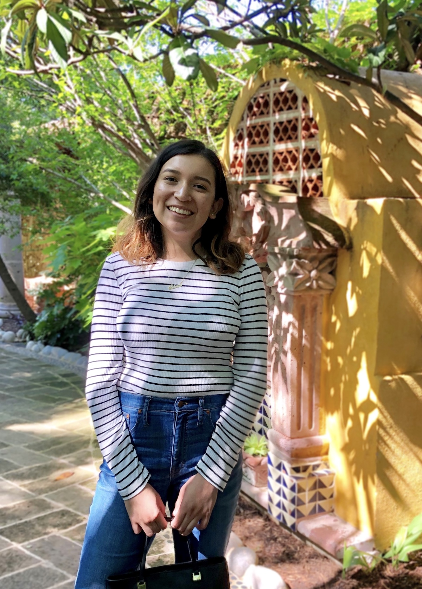

<div class="section">
  <div class="container">
    <div class="row">
      <div class="eight columns">
        <h1>Hi, Again!</h1>
      </div>
    </div>
    <div class="row" id="wrapper">
      <div class="seven columns">
        <p>
          I'm Silvia, a first-gen Mexicana🇲🇽, Texan 🤠, and Virgo ♍. I enjoy going down rabbit holes of topics (CRISPR anyone?) and am Beyoncé 🐝 and K-pop stan.
        </p>
        <p>
          I studied Computer Science at Tarleton State University, and thought I was going to be a software engineer. However after a few experiences, I landed in design. Recently completing a Interaction Design Specialization with UC San Diego.
        </p>
        <p>
          As a designer I aim to create experiences that service marginalized peoples better and move us into a more inclusive future.
          I use my analytical side to tackle complex problems and perspective to design creative solutions for those problems.
        </p>
        <p>
          hmu <a href="https://silviafuen.com">@silviafuen</a> if you'd like to work together!
        </p>
        <!--p>
          P.S. I'm looking to join a design team in 2020. <br /><a href="https://drive.google.com/file/d/1Lv0RhrFnCmpbACRdKx9fdLS_8sWtlnrE/view?usp=sharing">Check out my resume!</a>
        </p-->

      </div>
      <div data-aos="fade-left" data-aos-duration="2400" class="five columns">
        
      </div>
    </div>
    <!-- blue divider -->
  </div>
</div>
